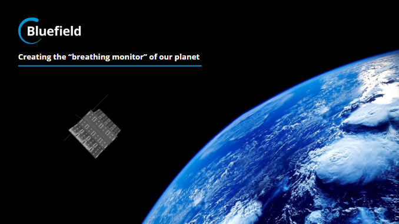
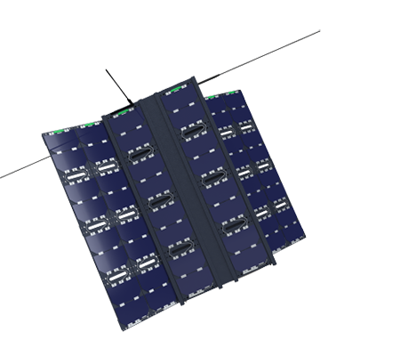
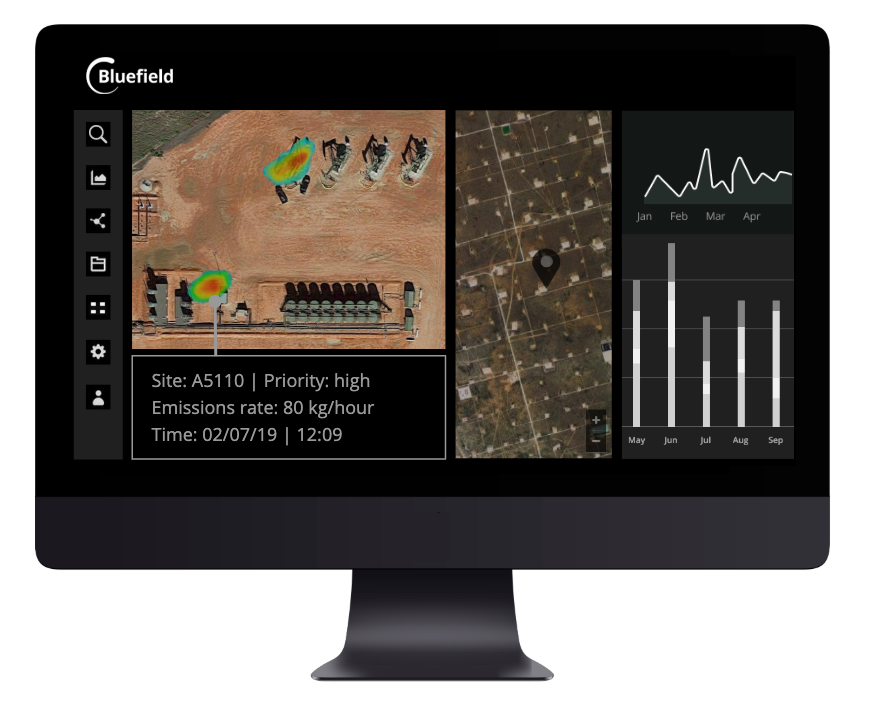

Using microsatellites equipped with a proprietary optical sensor, Bluefield is developing a global view of all methane emitting sites. Satellites will capture data about the location of the sites and the amount of methane emitted. Energy companies and environmental agencies will be able to use these data to prioritize, address, and eliminate leaks and significantly lower the impact to the environment.
 The remote sensing technology in the backpack-sized microsatellites is designed to pinpoint the location and intensity of critical methane leaks. Sensors detect the methane signature in sunlight as it is reflected off the ground. The detailed optical data is then analyzed using algorithms to generate additional details, including the volume of methane being emitted at any given location.
Users will access data through a subscription-based platform that provides proactive emissions alerts and analytics. Energy companies will be able to receive regularly updated views of their operations and facilities and use the alerts to identify urgent leaks and potential issues.
|  |
| Bluefield Technologies Microsatellite |
Bluefield has received grants and contracts in the United States and Canada. Also, they have signed cooperation agreements with multinational companies with worldwide operations.
In addition to increasing the number of satellites to provide more frequent updates and data points, Bluefield will leverage machine learning to refine the accuracy of the data. Although the technology will detect methane, the approach can be used to detect other greenhouse gases, including sulfur dioxide, CO2, and nitrogen dioxide.

Bluefield's Data Management Software